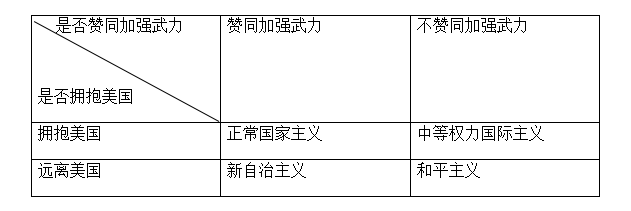

收录于合集
简
李格琴
中南财经政法大学哲学院政治学系副教授，主要研究方向：国际安全、中国外交
摘要
冷战后，美国学界对日本安全政策是否发生质的变化展开了争论。20世纪90年代中期，社会建构主义学者对日本“ 反军国主义文化 ”的研究略占上风。他们指出，冷战后的日本安全政策在“反军国主义文化”的制约下不会发生质的变化。21世纪以来， 新现实主义与制度自由主义的研究成为主流：前者认为，由于安全环境的变化，日本走向“正常化军事大国”的道路不可避免；后者指出，日本在安全态度上转向“国际主义” 。
**【 关键词 】 ******美国学界；日本安全政策；冷战后
美国学界从社会建构主义、新现实主义和新自由主义三个领域，对日本安全政策进行了研究。
社会建构主义
社会建构主义的观点认为，“ 安全文化影响国家安全政策 ”。托马斯·伯杰（Thomas U Berger ）、彼得·卡赞斯坦（Peter J Katzenstein）等学者依据社会建构主义理论认为，相 **比国际局势、周边安全等外部结构性因素，国内的文化规范更能影响日本安全政策的制定 。这种国内的文化规范就是所谓的“反军国主义文化”。**在《从剑到菊：日本的反军国主义文化》一文中，伯杰详细分析了日本“反军国主义文化”的起源、特征以及对日本安全政策制定的影响。他的核心观点是，起源于２０世纪５０年代美国占领时期的日本“反军国主义文化”，并没有因为美国占领的结束而消退，反而成为战后日本政治的核心特征。战后美国发起的“反军国主义 ”运动包括审判战犯、制定和平宪法、构建民主制度、鼓励民间和平团体等，亲历惨烈战争的日本人在这样的环境中开始自我反省。
在由彼得·Ｊ卡赞斯坦所著《文化规范与国家安全———战后日本警察与自卫队》一书中，卡赞斯坦认为可以从以下四个方面，观察日本反军国主义文化的变化。即政府是否可以利用军事手段维护国家利益，对日美军事持积极态度与否，日本社会党的主张在日本社会是否受欢迎和日本社会对修改宪法（尤其是宪法第九条）是否赞成。此外，作者还认为反军国主义文化影响日本自卫队在日本社会中的地位。
总体而言，社会结构主义认为日本舆论的变化，日本政党的变化和选举制度的改革会对日本的安全政策产生影响。
** 新现实主义**
詹妮弗·林德（Jennifer M Lind），艾利斯· 克劳斯（Ellis S Krauss）和理查德·赛缪斯（Richard J Samuel）则从新现实主义观点对日本的安全政策进行了考察。詹妮弗·林德在“Pacifism or Passing the Buck? Testing Theories of Japanese Security Policy”一文中认为，建构主义夸大了日本国内“反军国主义文化”对日本领导人制定安全政策的影响，无法解释日本自“９·１１”之后在安全政策上的戏剧性变化。“反军国主义文化”受到日本左翼与和平主义者的支持，但未能成为冷战后日本政府的长期政策。21世纪以后日本领导人，利用舆论鼓动民族主义，压制和平主义。
此外作者通过军备衡量了日本的军事力量，在2000年，空军方面，日本战斗机数量列世界第七位，空中预警机数量列第二位，飞行员每年飞行的小时数排第四位；海军方面，日本主要海上战斗队的数量、舰队防空能力以及战斗队总吨位，分别排在世界第三位、第二位与第三位。
艾利斯· 克劳斯根据 日本的防务预算、军队的规模和能力、军事工业发展、民事 —军事关系、对外联盟以及国内规范对军事的限制等指标，来追踪日本的防务能力与安全政策。并得出结论，日本一直都在逐步侵蚀“反军国主义文化”的限制，向着“重新军事化”的方向发展。
理查德·赛缪斯在《安全化日本：东京大战略与东亚的未来》一书中认为，日本现今有关安全政策的争议与19世纪、20世纪的时候没有本质区别，都是其在 经济还是军事、硬实力还是软实力、双边联盟还是多边机制等安全战略选择中徘徊 。赛缪斯认为，“二战”结束多年来，日本右翼领导人一直努力摆脱使用武力的各种限制，而冷战结束后这种突破军事限制的速度加快，1993—2003年之间就有15条与安全有关的新法律通过并实施。
赛缪斯还详细解读了日本外交、安全战略思想的发展、各流派代表人物及其社会基础。他通过“使用武力的态度”与“对美国的态度”两个轴线把“二战”后日本安全思想分为四个类型

“二战”刚结束时，和平主义思潮，普通民众与社会团体持续给政府施加压力，决策层主要是“中等权力国际主义”——吉田主义。
总体来说，新现实主义学者更倾向于认为，所谓 “反军国主义文化”只是务实、精明的日本人的权宜之策，一旦国际安全环境发生变化、国内条件成熟，他们就会迈开走向正常军事大国的步伐。地缘安全是影响日本安全政策的因素。
新自由主义
制度自由主义的核心观点是：尽管21世纪后日本安全政策变得更加主动，国内政治意识形态也整体向右转，但只要日本的军事发展是在 美日同盟体制框架中，其基本的民主制度不变， 日本安全政策的变化对美日同盟以及亚洲的稳定都是利大于弊的。
由美国战略与国际研究中心出版的《美日联盟：加强全球安全的新框架》（2008）一书中提到，在“安全”内涵已经发生巨大改变的新世纪，日本与美国必须将硬实力与软实力结合起来运用，拓展安全领域的合作空间。因为日本很早就确定了“综合安全观”，在维护非传统安全方面很有经验，日美能在未来亚太经济一体化、气候变化、能源安全、发展援助、核不扩散等方面加强与美国的合作，为地区稳定发挥更大的作用。
影响日本安全政策的原因
结构现实主义认为， 当体系结构发生变化时，行为体的认知与行为也会相应发生变化。 地缘安全的变化，比如20世纪90年代中期以后的朝核问题，导致日本改变了其安全政策。
社会建构主义认为以下三个原因导致日本安全政策变化。
第一，日本公众舆论的转变。
日本的公众舆论，日本人对安全的态度， 其核心是对国家使用武力效用的看法。 根源于２０世纪３０年代发动侵略战争的灾难性记忆，大部分日本民众对国家使用武力的效用产生了强烈的怀疑， 这种 “所有战争都是不正义的，军事力量无法解决问题”的安全认知，充分体现在战后日本社会团体发起的各种“和平主义”运动中，而这些运动有效限制了国内右翼鹰派企图发展军事力量的动议。
保罗· 米福德等学者在研究案例与民调后发现，日本民众在对“安全”的态度上发生了许多微妙的变化，他们也试图探讨这种变化与日本政府安全政策变化之间的相关联系。米福德认为，日本公众对安全的态度，已从“和平主义”转向了“防御性现实主义”。他分别收集了冷战、海湾战争、“９·１１”事件、伊拉克战争等不同国际事件中有关日本民众态度的民意调查，对比后发现，冷战后日本普通民众对“安全防务”的态度有了比“和平主义”（反对任何军事手段）理念更为宽泛的理解。
现在大多数日本民众则赞成日本拥有保卫国家领土的军事力量，支持政府小规模增强其在地区安全上的角色。米福德论证，早在２００４年的一项民意调查显示，７８.１％的日本民众认为，如果日本本土受到袭击，保卫国家的战争就是合法的，但他们仍旧认为非武力手段是解决国际纷争的最佳选择；在对外军事行动方面，有６７.１％的受访者支持日本自卫队进行国际灾难救援。“９·１１”事件发生后，有６５％的日本人支持自卫队参加反恐，这表明日本多数人赞成日本政府将自卫队用于海外反恐或人道救援等活动。米福德认为，日本民众在安全政策上的态度由“和平主义”转变为“现实主义”，但并非“进攻性现实主义”，而是典型的“防御性现实主义”。 而日本公共舆论的这种变化，也影响了日本政府的安全政策向着推进军事正常化的“防御性现实主义”转型。
为什么日本公众对安全的态度会发生变化？美国战略与国际研究中心试图从“代际变化”分析原因。他们研究发现， 随着日本民众的代际变化，即经历“二战”或者战后艰难岁月的日本人渐渐老去，出生并成长于日本经济复苏与崛起的新一代日本人逐渐成为社会主流，日本民众对军事、安全的看法发生了较大转变。 报告重点分析了日本民众在“修宪”态度上的变化。
第二，国内选举体制的改革。１９９４年，日本开始进行选举制度的改革，众议院选举由“中选区制”变为“小选区制与比例代表混合制”。哈佛大学的特韦斯指出，日本旧的选举制度不仅减弱了政客对安全防务问题的兴趣，也弱化了政党主席以及首相的权力与角色。特韦斯认为，新制度使政党的整体威望成为候选人竞选成败的关键，普通党员开始倾向要求一个强有力且受大众欢迎的党主席出现。政党主席与首相的政治威望与操控能力的提升，为他们在安全防务事务上的提出动议与突破限制奠定了基础。
第三，国内党派政治的转型。“二战”后，日本政治体制实行所谓的“５５年体制”，其特征是：自民党作为最大的执政党，社会党作为最大的在野党，两党形成保守派与左派在安全防务政策上的长期对峙。学者平田·凯科将日本社会的安全认同分为“和平主义”、“重商主义”、“正常主义”与“国家主义”四类。社会党在安全认同上倾向于“和平主义”，主张日本严格按照和平宪法治国，反对扩大自卫队，反对日美军事同盟。而自民党大部分成员属于“重商主义”或“正常主义”。“重商主义”强调日本自身的经济发展，在安全防务上重视日美同盟，愿意保持最低的防务开支。“正常主义”追求日本成为有足够军事防务能力的“正常国家”，接受日本增强军事力量维护国家利益、参与地区安全治理的观点，主张在平等的基础上发展日美同盟。 “二战”后大部分时间，基于社会党“和平主义”主张的广泛影响，加之执政党自民党内部“重商主义”的主流，日本政府最终选择了务实的“吉田主义”原则，国内追求“军事正常化”、“军事复兴”梦想的政治势力被有效牵制。
随着日本经济的强势崛起，社会党的影响在七八十年代逐渐衰落。
通过分析日本党派政治的转型，学者们得出如下结论：２１世纪以后，持“正常主义”意识形态的政治家在选举中崛起，他们掌握国家机器，获得更多提出安全动议的机会与权力，而支持“吉田主义”政策的“重商主义”意识形态逐渐衰落，继而失去了在２０世纪６０—９０年代支配日本政坛、主导安全事务的地位。随着党派政治的转型，日本政府的安全政策朝着追求“正常化军事大国”的方向迈进。
日本“反军国主义文化”从形成到发展，其核心内涵、支持群体与政治影响在不同的时间段有不同的内容，这是一个动态的过程，而不是一个静态的研究对象。“反军国主义文化”在“二战”后五六十年代，其核心思想倾向“和平主义”内容，即反对任何形式的军事机构与军事结盟，理想主义色彩浓厚，其支持群体与日本右翼的政治斗争也异常激烈；２０世纪七八十年代，随着日本经济的腾飞与民主秩序的稳定，日本民族的信心逐渐恢复，对军事机构的效用以及与美国结盟的态度也在发生转变，和平主义运动逐渐衰退，各方政治力量此消彼长，“反军国主义文化”的政治影响力与影响方式也在发生变化。继续探讨这些变化如何发生，而不是局限于范式之争，是我们以后研究的重点。
（ 本文经国政学人微信公众平台总结编辑后发布，较原文有较大改动，注释以及详细内容请参考原文）
文章来源：《太平洋学报》2014年22卷10期
筛选：早安老师 编辑：早安老师 凌宇